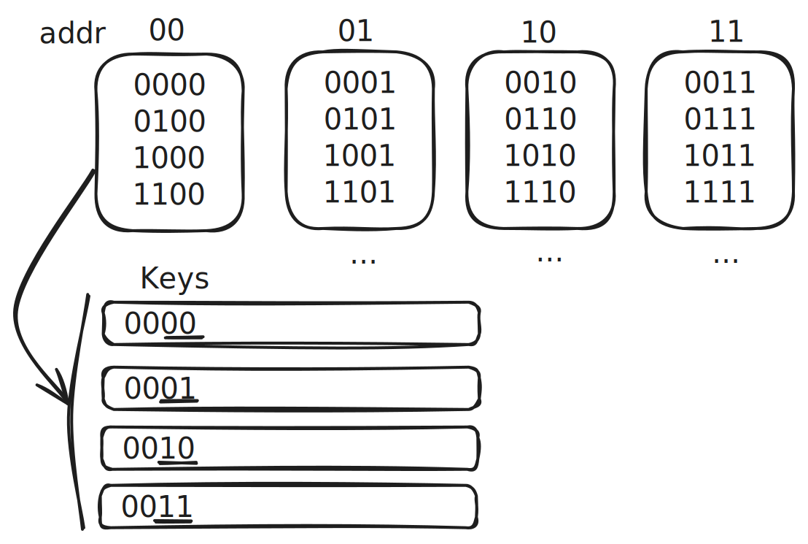

One detail of this approach has particularly fascinated me:
how to combine the address and history effectively to form a key
into the branch prediction table. I’ll consider two approaches:
At first glance, it seems like gshare is the obvious choice
since it uses more information from both the address and history.
But how do we really know it’s better? Is this something we can mathematically prove?
Let’s start by examining some concrete examples and move on to more
rigorous analysis showing that gshare might be worse than concatenation!
Reasons to think gshare is better
The intuitive argument for why gshare is superior goes like this:
sometimes we need more address bits for better predictions,
and sometimes we need more branch history bits.
The XOR hash in gshare uses more of both
by hashing all n-bits of the address and history into the key!
Concatenation, on the other hand, uses a fixed number of bits from
both the address and history.
At first glance, this makes gshare seem like improvement.
And we can even come up with some examples to demonstrate this.
gshare is better
Same branch history, different predictions
With gshare, two different addresses with the same branch history
will always map to different keys: this is important
for prediction accuracy when the two branches have
different outcomes.
Branch address history gshare concat actual
A 1010 1011 0001 1011 0
B 1110 1011 0100 1011 1
gshare disambiguates the two branches
with different outcomes, while concatenation does not.
Using more history bits
Let’s assume we have a branch history pattern like this:
1101 1101 1101 1101...
With a 1-bit prediction table, long-term gshare has 100%
prediction accuracy, while concatenation has 50% accuracy.
address history gshare concat actual
1010 1101 0111 1001 1
1010 1110 0100 1000 1
1010 0111 1101 1011 0
1010 1011 1000 1011 1
The reason is that the 0111 and 1011 histories alias.
Because the actual result alternates between 0 and 1,
the prediction bit alternates as well.
Even if we used 2-bit saturation counter, we would only improve
the accuracy to 75%.
gshare is worse
However, we can also come up with an example where gshare
does worse than concatenation. Two keys in the branch
prediction table will collide in gshare
when the address of one equals the history of the other (and vice versa):
branch address history gshare concat actual
A 0011 1100 0000 1100 1
B 1100 0011 0000 0011 0
In this case, both branches map to the same prediction entry (0000)
even though they have different behaviors. Concatenation keeps them
separate because it uses different bits from the address and history.
So if the branch was running in a way where branch A was always executed
before branch B, the prediction accuracy of gshare would be 0%!
Given the intuitive argument for gshare,
it might be surprising to see a case when gshare does worse.
But should any of these examples really convince us that
gshare is better or worse than concatenation?
Are these examples typical or edge-cases?
Let’s analyze this mathematically by starting with clear assumptions.
Mathematical proof that gshare is worse
Let’s define a “program” as a set branches, each with a unique n-bit address.
Each address has a random n-bit history.
As we saw in the examples, one dimension of poor branch prediction performance is key collisions.
Can we show that gshare is less likely to have key collisions
than concatenation? No. In fact, the opposite is true.
gshare is slightly more likely to have key collisions
than concatenation!
What’s going on here? Isn’t gshare supposed to be better?
Well this analysis depends entirely on our assumptions. Here we assumed:
- the branch history is random
- collisions indicate poor branch prediction performance
- we can ignore the sequential nature of branch history
The first assumption is the most problematic. Branch history
is not random, so the analysis here is not as informative
as it is for sorting algorithms. Even a simple “branch taken” algorithm
can achieve 70% accuracy!
Let’s start with the intuition behind why concatenation has fewer
collisions, then walk through a mathematical proof.
Intuitive explanation why gshare is worse
To build some intuition, let’s start with the extreme case:
what’s the maximum number of key collisions for each scheme?
For gshare, since we are assuming the history is random,
there’s a chance that each history maps to the inverse
of the address, mapping every address/history to the 0 key:
a complete collision!
On the other hand, with a 4-bit concatenation scheme for example,
addresses with the same last 2 bits will always map
to the same set of 4 keys.

So any key can have at most 4 collisions.
But maximum collisions are extremely rare.
The simulation below shows 100 random cases:
XOR usually has no more than 4 collisions, and rarely 5.
Intuitively, concatenation might have fewer collisions
because no single key can be mapped to more than 4 address/branch
pairs, while XOR could theoretically map all pairs to the same key.
However, this is the worst case scenario: we need to prove
this for the average case.
XOR
Let’s analyze a specific case:
a program with 16 unique branch addresses,
each with a random 4-bit branch history.
And let’s suppose our branch prediction table has a fixed 4-bit key size,
allowing 16 different keys.
For XOR collisions, I’ll show that any address/branch pair can map to any key
and that this feature means that
XOR collisions is equivalent to a standard combinatorial problem
with a well-known formula for collisions.
To start, I’ll prove no key is “left out” of the mapping:
some address/branch pair can map to any key of the table.
Suppose k is any possible 4-bit key.
Then if we have a fixed 4-bit address a,
we can always find a 4-bit history h such that
k = a ^ h:
k = 0 ^ k = (a ^ a) ^ k = a ^ (a ^ k) = a ^ h
And each address/branch pair maps uniquely to a single key.
Given our address a, if two different histories
map to the same key, they are the same history:
a ^ h1 = k = a ^ h2
h1 = a ^ k = a ^ (a ^ h2) = h2
Therefore, collisions must be possible, since
any address can map to any key and we are randomly
choosing the history.
Now let’s reframe the question into a standard combinatorial problem:
imagine we have 16 balls (our addresses) and 16 bins (our keys).
When we randomly choose a history for an address, it’s like randomly
throwing a ball into a bin.
Our question becomes:
what’s the expected number of bins with 2 or more balls?
A good approach is to use the complement probability:
i.e. what’s the probability that a bin is empty
and what’s the probability that a bin has 1 ball?
Then the probability that a bin has 2 or more balls is
\[
1 - \left( \frac{15}{16} \right)^{16} - \binom{16}{1} \frac{1}{16} \left( \frac{15}{16} \right)^{15} \simeq 0.26
\]
Therefore, 16 * 0.26 = 4.23 bins are expected to have 2 or more balls.
So about 4 collisions are expected.
Concatenation
For concatenation, I’ll apply the balls and bins analysis again.
As we pointed out in our intuitive explanation,
addresses that end in 00 can only be mapped
to the keys that start with 00.
This splits our problem into four independent cases of
4 balls into 4 bins.
For each case, the expected number of bins with 2 or more balls is
0.267 * 4 = 1.05. With 4 independent cases, the expected number
is about 4.19.
So concatenation has fewer expected collisions than XOR!
The exact margin is small and also depends on how you
concatenate address and history. I’ve used half and half,
but other ratios are also possible.
Conclusion
Comparing algorithms depends on assumptions.
For example, quicksort has better average-case
performance than insertion sort, but has the same worst-case complexity
and performs worse when data is almost sorted! Similarly, iterating over an array
of structs versus a struct of arrays might have identical computational
complexity, but very different performance due to CPU cache behavior.
In our case, assumptions that are reasonable in one context (like random
data for sorting) can be unrealistic in another (like branch history).
A basic theoretical analysis with simplified assumptions like mine
does not really correlate with real-world performance. We need empirical
data from real programs to understand which approach works better.
The next post in this series will show how to gather and analyze
this real-world data using LLDB.